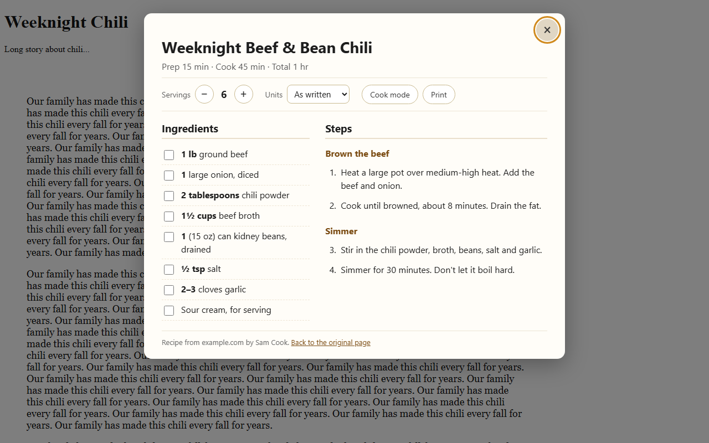

Recipe Card: just the recipe, one click away
Recipe pages bury the ingredients under a long story, ads, and pop-ups. Recipe Card is a small, free browser add-on: click its button and the recipe opens as a clean card on top of the page. You can use it today as a bookmark button, with nothing to install.
(this runs the add-on's own code on the demo chili recipe here; press Esc to close)

What it does
- Ingredients and steps only. Tick off ingredients as you go and tap a step to mark it done.
- Scale servings. Amounts change with real kitchen fractions (1½ cups, not 1.5000). Package sizes like "1 (15 oz) can" stay as written; only the count changes.
- Metric or US units. Cups, tablespoons, ounces, and pounds convert to ml and grams, and back. Oven temperatures in the steps get the other scale added (350°F becomes 350°F (175°C)). Cups of flour convert to ml, not grams, because the weight depends on the ingredient.
- Cook mode keeps your screen from going to sleep while you cook (where the browser supports it).
- Print just the recipe, without the rest of the page.
- Keyboard shortcut: Alt+Shift+R.
Get it
Use it now, no install: drag this button to your bookmarks bar.
Then, on any recipe page, click Recipe Card in your bookmarks bar. Click it again (or press Esc) to close. Tested in Chrome and Edge on a computer; Firefox and Safari run bookmark buttons like this too. Can't see the bookmarks bar? Press Ctrl+Shift+B (Cmd+Shift+B on a Mac). The bookmark version has everything except the keyboard shortcut and remembering your units choice.
A few sites block bookmarks like this one with a strict security setting; nothing happens when you click it there. The add-on version (coming, see below) works on those too.
Add-on: Firefox and Microsoft Edge versions are coming. This page will link to them once they're listed in the add-on stores.
Free printable: kitchen conversion chart
One page with cups and spoons in mL, what half or a third of 1/3 cup is, ounces in grams, and oven temperatures in Celsius. See the chart and download the PDF.
Free tool: recipe scaler
Got a recipe from a book, a card, or a message? Paste the ingredient list, set the servings, and every amount comes back in cups and spoons you can measure (half of 1/3 cup is 2 tbsp + 2 tsp), or in metric. Open the recipe scaler.
How it works
Most recipe sites include the recipe in a standard format for search engines (schema.org Recipe). Recipe Card reads that, so it works on most recipe sites without any site-by-site rules. If a page doesn't include it (some older blogs, list and search pages), the card says so and you can use the page as normal.
Privacy
- Recipe Card only reads a page when you click its button on that page. It doesn't ask for access to all websites, and it never runs in the background.
- It collects nothing and sends nothing anywhere: no analytics, no account, no servers. The recipe is read and shown inside your browser.
- The only thing the add-on saves is your units choice (as written, metric, or US), in your browser's add-on storage. The bookmark version saves nothing at all, and it runs only when you click it.
Questions and bug reports
If a recipe site shows the wrong amounts or no recipe, please report it on the add-on's store page (the "support" link) and include the page address.